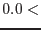
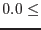
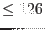
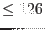

| Parameter | Mand | Type | Default | Constraints |
| prefix | no | string | 'MERGED_' | |
File name prefix for the output files.
|
| withcheckinput | no | boolean | true | true false false |
Whether to check the individual input images for consistency.
|
| maskindividual | no | boolean | false | truefalse |
Boolean to choose whether or not the images of individual exposures will be masked, if a corresponding mask for this exposure exists.
|
| withaddimages | no | boolean | true | truefalse |
Whether to add the images of individual exposures.
|
| withcombineimages | no | boolean | true | truefalse |
Whether to combine the individual EPIC instruments.
|
| ecut | no | real | 1000. |  ecut |
Exposure cut (in seconds). Areas with less exposure will be masked.
|
| exposureband | no | integer | first band | |
Energy band of the exposure map, which is used to create the mask.
|
| epn_weight | no | real list | 1.0 | epn_weight |
A weight for the exposure of each energy band of EPIC-pn.
|
| em1_weight | no | real list | 0.4 | em1_weight |
A weight for the exposure of each energy band of EPIC-MOS1.
|
| em2_weight | no | real list | 0.4 | em2_weight |
A weight for the exposure of each energy band of EPIC-MOS2.
|
| withasmooth | no | boolean | true | truefalse |
Whether to create the smoothed and corrected images.
|
| smoothstyle | no | string | adaptive | simple|adaptive |
asmooth: The type of smoothing desired.
|
| convolverstyle | no | string | gaussian | gaussian | tophat | squarebox |
asmooth: This parameter is read if smoothstyle=`simple' is chosen and prescribes the shape or type of convolver to use to smooth the image.
|
| width | no | real | 5.0 pixels |  width  pixels pixels |
asmooth: This parameter is read if smoothstyle=`simple' is chosen. It governs the width of the various types of simple convolver.
|
| withuserwidths | no | boolean | no | |
asmooth: This parameter is read if smoothstyle=`adaptive' is chosen. If set, the task reads a list of gaussian-convolver sigma values from the userwidths parameter.
|
| userwidths | no | real list | | userwidths pixels |
asmooth: The list of gaussian-convolver sigma values read when withuserwidths=`yes'. The values must occurr in a monotonically increasing sequence.
|
| minwidth | no | real | 0.0 pixels | minwidth pixels |
asmooth: If smoothstyle='adaptive' is chosen but withuserwidths=`no'
the task constructs a library of gaussian convolvers which have sigma values ranging from minwidth to maxwidth.
|
| maxwidth | no | real | 10.0 pixels | maxwidth pixels |
asmooth: If smoothstyle='adaptive' is chosen but withuserwidths=`no',
the task constructs a library of gaussian convolvers which have sigma values ranging from minwidth to maxwidth.
|
| desiredsnr | no | real | 10.0 | desiredsnr |
asmooth: Desired signal-to-noise ratio in an adaptively-smoothed image.
|
| nconvolvers | no | integer | 20 |  nconvolvers  nconvolvers  |
asmooth: If smoothstyle='adaptive' is chosen but withuserwidths=`no', the task constructs a library of nconvolvers gaussian convolvers.
|
| templatebands | no | integer list | all bands | |
If smoothstyle='adaptive' is chosen, the parameter defines the energy bands, which are used to estimate the statistics for the smoothing template.
|
| keepinterstage | no | boolean | true | truefalse |
Boolean to choose whether or not intermediate products will be removed.
|
| n_parallel | no | integer | 1 | |
Experimental tuning parameter to define the maximum number of parallelly executed processes.
|
| Parameter | Mand | Type | Default | Constraints |